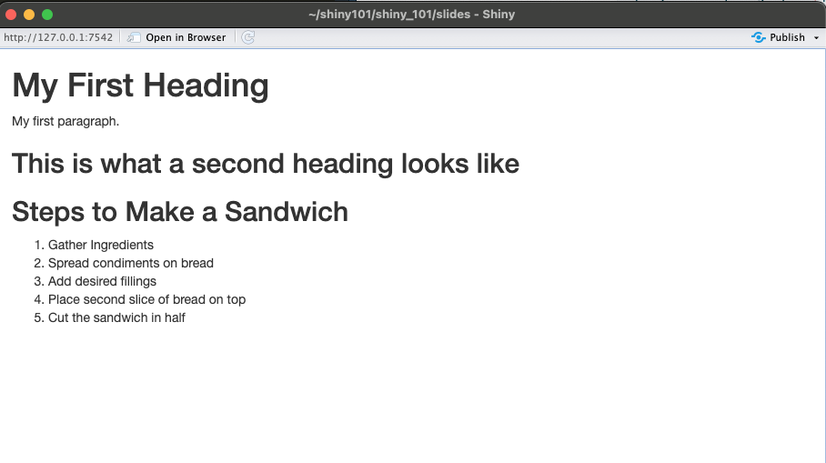

<div class="header" checked><p>Ready to take the Shiny tutorial? If so</p><a href="shiny.posit.co/tutorial">Click Here!</a> Thank you</div>
This is a very basic chunk of HTML code. HTML (Hypertext Markup Language) uses tags to structure content on web pages. Tags are enclosed in angle brackets < > and typically come in pairs: an opening tag and a closing tag.
Here are some of the most common and basic HTML tags:
<html>: This tag wraps the entire HTML document and signifies the start of the HTML code.
<head>: This tag contains meta-information about the document, such as its title, character encoding, and links to external resources like stylesheets and scripts.
<title>: This tag specifies the title of the HTML document, which appears in the browser’s title bar or tab.
<body>: This tag contains the main content of the HTML document, including text, images, videos, and other elements.
<h1>, <h2>, <h3>, <h4>, <h5>, <h6>: These tags create headings of different levels, where <h1> is the most important (usually the largest and boldest) and <h6> is the least important (usually the smallest).
<p>: This tag defines a paragraph of text.
<a>:This tag creates hyperlinks, allowing you to link to other web pages or resources. It is often used with the href attribute to specify the URL of the link.
<img>:This tag embeds images in the document. It requires the src attribute to specify the URL of the image file.
<ul> and <ol>: These tags create unordered and ordered lists, respectively. <ul> is for bullet-point lists, while <ol> is for numbered lists. List items are defined using the <li>tag within these list containers.
<br>: This tag inserts a line break within the text.
<hr>: This tag creates a horizontal line, typically used to separate content sections.
<div> and <span>: These tags are generic containers used for grouping and styling content.
is a block-level element, and is an inline element.
<table>: This tag creates a table for organizing data. Tables consist of rows (
) and cells (
for regular cells,
for header cells).
You can use HTML directly in RMarkdown:
Example:
This code below creates the chunk of text below:
<html><body><h1>My First Heading</h1><p>My first paragraph.</p><h2>This is what a second heading looks like </h2><h2>Steps to Make a Sandwich</h2><ol><li>Gather Ingredients</li><li>Spread condiments on bread</li><li>Add desired fillings</li><li>Place second slice of bread on top</li><li>Cut the sandwich in half</li></ol></body></html>
My First Heading
My first paragraph.
This is what a second heading looks like
Steps to Make a Sandwich
Gather Ingredients
Spread condiments on bread
Add desired fillings
Place second slice of bread on top
Cut the sandwich in half
CSS
So what is CSS?
CSS, which stands for Cascading Style Sheets, is a styling language used to describe the presentation of a document written in HTML or XML (including XML dialects such as SVG or XHTML).
CSS allows you to specify how HTML elements should appear on the screen or in other media. This includes properties such as color, size, font, spacing, and positioning and enables the separation of content (HTML) from presentation (styling). This separation makes it easier to manage and update the appearance of a website or document without needing to alter the underlying content.
Take a look at the example below:
/* Selecting all paragraphs */p {/* Declaration Block */color:blue;/* Setting text color to blue */font-size:16px;/* Setting font size to 16 pixels */margin-top:20px;/* Setting top margin to 20 pixels */}
In this example, p is the selector targeting all <p> elements in the HTML document. The declaration block inside the curly braces contains three declarations setting the text color, font size, and top margin for those paragraphs.
<div>
In the example below:
The HTML code creates a webpage with a <div> element having a class attribute set to “container”. Inside this <div>, there are two paragraphs.
The CSS code (in a separate file named styles.css linked to the HTML document) applies styles specifically to the elements with the class “container”. It sets the background color to light blue, adds padding, and creates a border around the container.
<html lang="en"><head><meta charset="UTF-8"><meta name="viewport" content="width=device-width, initial-scale=1.0"><title>HTML and CSS Example</title><link rel="stylesheet" href="styles.css"></head><body><div class="container"><p>This is a paragraph inside a div with class "container".</p><p>This is another paragraph.</p></div></body></html>
/* CSS for the class "container" */.container {background-color:lightblue;/* Setting background color to light blue */padding:20px;/* Adding padding of 20 pixels */border:1pxsoliddarkblue;/* Adding a border with 1 pixel width and dark blue color */}
Translating HTML for use in Shiny
You don’t need to know HTML to use Shiny - but it is useful to know in order to customise your apps. The UI calls R functions that output HTML code. Shiny turns this code into a web app. For example, in the script below, the Shiny script actually outputs the commented HTML script at the end:
fluidPage(# App title ----titlePanel("Hello Shiny!"),# Sidebar layout with input and output definitions ----sidebarLayout(# Sidebar panel for inputs ----sidebarPanel(# Input: Slider for the number of bins ----sliderInput(inputId ="bins",label ="Number of bins:",min =1,max =50,value =30) ),# Main panel for displaying outputs ----mainPanel(# Output: Histogram ----plotOutput(outputId ="distPlot") ) ))## <div class="container-fluid">## <h2>Hello Shiny!</h2>## <div class="row">## <div class="col-sm-4">## <form class="well">## <div class="form-group shiny-input-container">## <label class="control-label" for="bins">Number of bins:</label>## <input class="js-range-slider" id="bins" data-min="1" data-max="50" data-from="30" ## data-step="1" data-grid="true" data-grid-num="9.8" data-grid-snap="false" ## data-prettify-separator="," data-prettify-enabled="true" data-keyboard="true" ## data-keyboard-step="2.04081632653061" data-data-type="number"/>## </div>## </form>## </div>## <div class="col-sm-8">## <div id="distPlot" class="shiny-plot-output" style="width: 100% ; height: 400px"></div>## </div>## </div>## </div>
First, let’s look at the syntax again, used to create the HTML example above:
<html><body><h1>My First Heading</h1><p>My first paragraph.</p><h2>This is what a second heading looks like </h2><h2>Steps to Make a Sandwich</h2><ol><li>Gather Ingredients</li><li>Spread condiments on bread</li><li>Add desired fillings</li><li>Place second slice of bread on top</li><li>Cut the sandwich in half</li></ol></body></html>
###There are a couple of ways to use that code in a Shiny app:
Both ways below result in the following UI:

1. Translate the HTML code into R code:
library(shiny)ui <-fluidPage( tags$h1("My First Heading"), tags$p("My first paragraph."), tags$h2("This is what a second heading looks like"), tags$h2("Steps to Make a Sandwich"), tags$ol( tags$li("Gather Ingredients"), tags$li("Spread condiments on bread"), tags$li("Add desired fillings"), tags$li("Place second slice of bread on top"), tags$li("Cut the sandwich in half") ))server <-function(input, output) {# Server logic goes here}shinyApp(ui, server)
It is recommended to use the second method, be is it more flexible and allows for widgets and other things to be dispersed among the HTML code.
tagsshiny::tags is a list of 110 functions. Each function builds a specific HTML tag. You can learn what the most common tags do in the Shiny HTML tags glossary.
Each tag function will add unnamed arguments to your tag as HTML children. This addition lets you nest tags inside of each other (just as in HTML).
tags$div(class ="header", checked =NA, tags$p("Ready to take the Shiny tutorial? If so"), tags$a(href ="shiny.posit.co/tutorial", "Click Here!"))## <div class="header" checked>## <p>Ready to take the Shiny tutorial? If so</p>## <a href="shiny.posit.co/tutorial">Click Here!</a>## </div>
2. You can also wrap all of your HTML code into a HTML() function
You cannot put raw HTML directly into a tag or UI object (like in the example below). Shiny will treat raw HTML as a character string, adding HTML as text to your UI document.
To add raw HTML, use the HTML function. HTML takes a character string and returns it as HTML (a special class of object in Shiny).
library(shiny)# Define UI for application that draws a histogramui <-fluidPage(HTML('<h1>My First Heading</h1><p>My first paragraph.</p><h2>This is what a second heading looks like </h2> <h2>Steps to Make a Sandwich</h2> <ol> <li>Gather Ingredients</li> <li>Spread condiments on bread</li> <li>Add desired fillings</li> <li>Place second slice of bread on top</li> <li>Cut the sandwich in half</li> </ol>'))# Define server logic required to draw a histogramserver <-function(input, output) {}# Run the application shinyApp(ui = ui, server = server)
Shiny will assume that the code you pass to HTML is correctly written HTML. Be sure to double check it.
Warning
It is a bad idea to pass an input object to HTML:
tags$div(HTML(input$text))
This allows the user to add their own HTML to your app, which creates a security vulnerability. What you user enters could be added to the web document or seen by other users, which might break the app. In the worse case scenario, a user may try to deploy malicious Cross Site Scripting (XSS), an undesirable security vulnerability.
So how do we go about getting the above CSS into our Shiny app? Inline or file based.
1. Inline:
The way to do this in Shiny is using the head and styles tags:
# Define UI for application that draws a histogramui <-fluidPage( tags$head(# Note the wrapping of the string in HTML() tags$style(HTML(" @import url('https://fonts.googleapis.com/css2?family=Yusei+Magic&display=swap'); body { background-color: black; color: white; } h2 { font-family: 'Yusei Magic', sans-serif; } .shiny-input-container { color: #474747; }")) ),titlePanel("Old Faithful Geyser Data"), ...)
Inlining CSS within the main app script offers the advantage of convenience, as developers can quickly access and modify styles without navigating between multiple files. This approach reduces the time spent switching between files and eliminates the need for creating and linking external CSS files, simplifying the development process. However, drawbacks arise when the CSS code grows significantly, leading to a cluttered and unwieldy UI function within the app script.Therefore, inlining is most suitable during initial development stages when the CSS is concise, but as the codebase expands, transitioning to a file-based workflow becomes necessary for better organization and maintainability.
File based
You can keep your css script in a separate file in the www/ folder.
A note about www/
One thing you may notice is that we placed our CSS file in the sub folder www/, but we only specified the CSS file’s name (dark_mode.css) in our href or “hyperlink reference” argument. The www/ folder is a special one for Shiny. Resources your app may link to, such as images—or in this case, scripts—are placed in the www/ folder. Shiny then knows to make these files available for access from the web browser. If we had placed dark_mode.css at the same file hierarchy next as app.R, Shiny would not know that it needs to host it, and your app would tell the browser to look for a file that was not available to
In www/style.css
/* Get a fancy font from Google Fonts */@importurl('https://fonts.googleapis.com/css2?family=Yusei+Magic&display=swap');body {background-color:black;color:white;/* text color */}/* Change header text to imported font */h2 {font-family:'Yusei Magic',sans-serif;}/* Make text visible on inputs */.shiny-input-container {color:#474747;}
tags$link: This is an HTML tag used to link external resources such as stylesheets (CSS files) or other documents. It’s typically used within the <head> section of an HTML document. In this case, it’s being used to link a CSS stylesheet.
rel = "stylesheet": This is an attribute of the <link> tag. It specifies the relationship between the current document and the linked resource. In this case, it indicates that the linked resource is a stylesheet.
type = "text/css": Another attribute of the <link> tag. It specifies the MIME type of the linked resource. “text/css” indicates that the linked resource is a CSS file.
href = "style.css“: Yet another attribute of the <link> tag. It specifies the URL of the linked resource. In this case,”style.css” is the URL of the CSS file that will be used to style the content of the Shiny app.
Other ways of using css:
theme = "styles.css"
You can pass a CSS file directly to your app using the theme argument in your UI function, much the same as the tags$link() method. However, it’s not recommended anymore because the theme argument is now commonly used by the bslib package to pass in custom bootstrap theming options. (bslib also provides its own functionality for adding additional CSS to a given bootstrap theme with the function bslib::bs_add_rules().)
includeCSS()
The function includeCSS() is an amalgamation of inline and file-based CSS. It takes as its argument a file path—this time not necessarily in the www/ folder—and pastes that file’s contents directly into the HTML of your app instead of using a file link. This means:
# Define UI for application that draws a histogramui <-fluidPage(includeCSS("www/dark_mode.css"),titlePanel("Old Faithful Geyser Data"), ...)
makes Shiny build the same HTML as doing
# Define UI for application that draws a histogramui <-fluidPage( tags$head( tags$style(HTML(" @import url('https://fonts.googleapis.com/css2?family=Yusei+Magic&display=swap'); body { background-color: black; color: white; } /* Change font of header text */ h2 { font-family: 'Yusei Magic', sans-serif; } /* Make text visible on inputs */ .shiny-input-container { color: #474747; }")) ),titlePanel("Old Faithful Geyser Data"), ...)
Editing CSS in your browser:
Demo:
Run the code and make some changes in the browser: